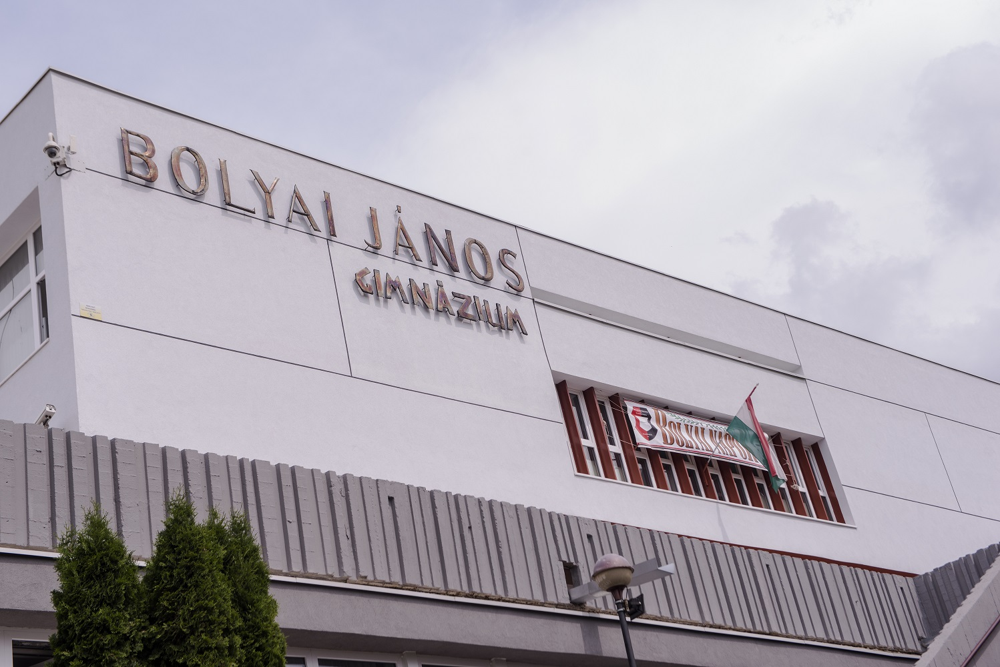
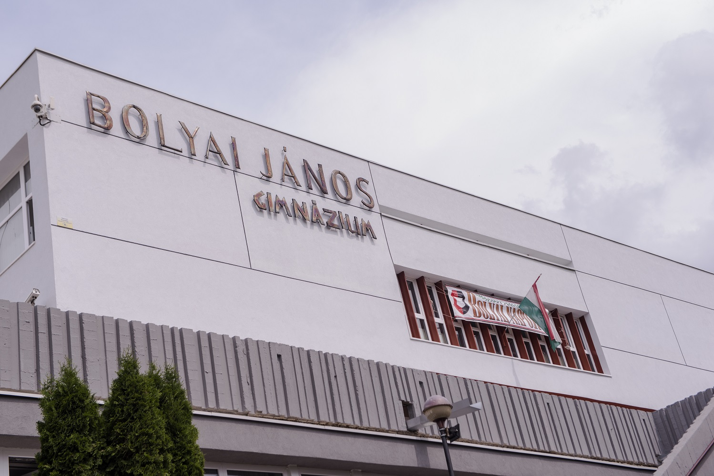

Bemutatkozás
Bemutatkozás
Csapó Sándor István vagyok, a Budapesti Műszaki- és Gazdaságtudományi Egyetem gépészmérnöki alapszakos, elsőéves hallgatója. Salgótarjánban születtem, itt végeztem az iskoláimat is. A Bolyai János Gimnázium kéttannyelvű képzésére jártam, ahol a kedvenc tárgyaim az angol és a matematika voltak. A matematika iránti érdeklődésem miatt jelentkeztem a BME gépészmérnöki szakára is. Hobbijaim: érdekel a nyelvtanulás, szeretek utazni, és rendszeresen játszok számítógépes játékokkal. A kedvenc játékaim közé tartozik a TF2, az Overwatch, a Hearthstone és még sok más.